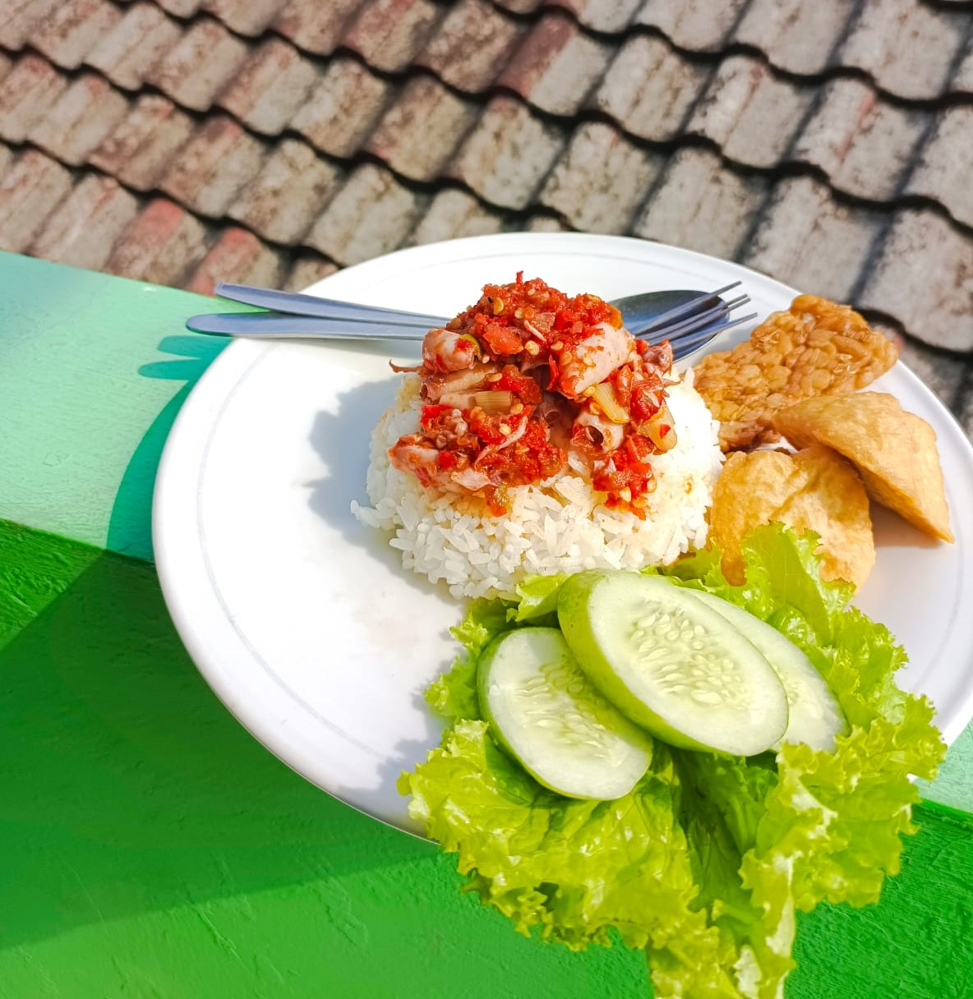

Sambal Cumi Tonjok

Ingin makanan yang enak tapi khawatir ga sehat? Sambal cumi bisa menjadi solusi, banyak manfaatnya sobat!

Manfaat dari Sambal dan Cumi
1. Sambal Yang Pedas Bisa Menurunkan Tekanan Darah
2. Sambal Bermanfaat Buat Meningkatkan Konsentrasi
3. Sambal Dapat Menghilangkan Rasa Sakit Untuk Sementara
4. Cumi Membantu menurunkan kolesterol
5. Cumi Bisa Menjaga kesehatan tulang dan gigi
START FROM 11K TO 25K!
Tentang kami
Jl. Kertabumi, Karawang Kulon, Kec. Karawang Bar., Karawang, Jawa Barat 41311